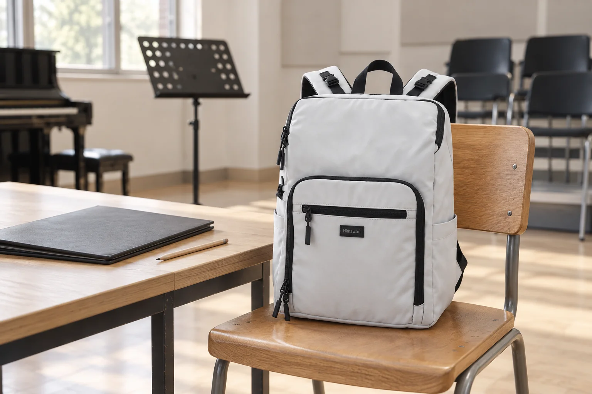

합창 연습의 악보를 찾기 쉬운 순서로

합창 연습에 가져가는 악보는 종이의 장수만으로 정리하기 어렵습니다. 같은 곡의 다른 파트가 섞일 수 있고, 지난 연습에서 받은 수정 메모가 파일 뒤쪽에 남아 있기도 합니다. 오늘 부를 곡을 찾았는데 다른 사람이 보고 있는 페이지와 맞지 않으면 연습 중에 다시 묶음을 확인해야 합니다. 출발 전에 제목과 판본, 페이지 순서를 대조하면 악보를 담는 준비가 실제로 펼치는 준비까지 이어집니다.
연습 안내에 곡 목록이 있다면 파일의 목차와 나란히 놓고 읽어보세요. 제목이 같아도 편곡이나 페이지 번호가 다를 수 있으므로 본인이 사용할 자료가 맞는지 확인합니다. 새로 받은 종이를 기존 곡 사이에 끼웠다면 앞뒤 페이지와 연결되는지도 봅니다. 곡마다 여러 장이 있을 때는 번호가 뒤집힌 부분을 먼저 정리하면, 현장에서 장수가 많은 파일 전체를 다시 꺼내지 않아도 됩니다.
오늘 연습할 묶음과 남겨둘 자료
모든 악보를 늘 함께 가져가야 하는지에 따라 정리 방식이 달라집니다. 당일 안내가 분명하다면 오늘 쓸 곡을 한 묶음으로 만들고 지난 자료는 별도로 보관할 수 있습니다. 곡 순서가 바뀔 수 있는 연습이라면 각 곡의 시작을 찾을 수 있도록 제목 표식을 두는 방식이 편할 수 있습니다. 표식은 음표나 이미 적은 메모를 가리지 않는 자리여야 하며, 길게 튀어나와 가방 입구에 걸리지 않는지도 확인합니다.
한 파일을 계속 사용한다면 앞부분에 짧은 목차를 넣어두는 방법이 있습니다. 예를 들어 첫 곡의 시작 페이지와 다음 곡이 놓인 위치를 적고, 수정본을 받았을 때 그 위치를 함께 바꿉니다. 파일 밖에 적힌 제목만으로는 어디를 열어야 할지 알기 어려우므로 실제 펼치는 위치를 기록하는 것입니다. 이는 정해진 방식이 아니라 여러 곡을 한 파일로 관리하는 사람에게 시도할 만한 정리입니다.
악보에 남은 메모도 확인할 필요가 있습니다. 연습 중 급하게 적은 표시가 어느 마디를 가리키는지 출발 전에 한 번 읽어보세요. 다른 곡의 메모를 붙인 채 두었다면 그 곡으로 옮기고, 새 안내와 충돌하는 오래된 표시는 진행자의 지시에 따라 정리합니다. 연습 내용을 다시 해석해 임의로 바꾸기보다 읽을 수 있는 상태로 준비하는 데 초점을 두면, 현장에서 확인할 질문도 구체적으로 남습니다.
닫힌 파일과 펼친 파일의 차이
가방에 넣을 때 단정한 파일이 악보대에서도 편한지는 별도로 봐야 합니다. 집에서 실제로 사용할 순서로 몇 장을 넘겨보면 두꺼운 묶음이 잘 펼쳐지는지, 속지에 넣은 종이의 글씨가 읽히는지 확인할 수 있습니다. 페이지를 넘기는 동안 다음 장까지 함께 넘어간다면 종이와 속지의 배치를 다시 살펴봅니다. 이동용으로 닫는 방식과 연습 중 펼쳐두는 방식을 미리 나누어 생각하면 됩니다.
Himawari No.1223 제품 정보의 확인된 외부 크기는 가로 29 × 세로 40 × 폭 14cm입니다. 악보를 운반할 가방으로 검토한다면 파일을 닫았을 때의 실제 크기와 입구를 함께 대조해야 합니다. 겉면의 치수는 파일이 걸리지 않고 지나갈지, 다른 짐과 함께 놓였을 때 모서리가 눌릴지를 대신 알려주지 않습니다. 악보 파일이 담긴다는 전제 없이 필요한 조건부터 정하는 편이 선택에 도움이 됩니다.

악보 파일을 넣은 뒤에는 연필을 종이 사이에 끼워두지 않는 방식도 생각할 수 있습니다. 이동하면서 연필이 빠지면 가방 바닥을 찾아야 하고, 페이지에 기대어 있으면 꺼낼 때 함께 움직입니다. 작은 필통에 연필과 필요한 지우개를 모은 다음 파일과 함께 꺼낼 수 있는 위치를 실제로 정해보세요. 필통 하나를 더하는 것보다 악보를 놓은 뒤 바로 필기구를 찾는 순서가 맞는지를 확인하는 것이 우선입니다.
연습 중 남긴 기록의 자리
여백에 바로 적을 수 없는 내용은 작은 메모에 적되 곡 제목이나 페이지를 함께 남깁니다. 연습이 끝난 뒤 숫자만 적힌 메모를 보면 무슨 내용이었는지 다시 떠올려야 합니다. 예를 들어 시작 위치를 적었다면 곡 제목과 함께 묶어두고, 다음 연습 안내는 악보 수정 메모와 나누어 보관할 수 있습니다. 메모 종이가 여러 장 늘어난 경우에는 오늘 필요한 기록을 악보 가까이에 남기고 일정 관련 종이는 따로 정리합니다.
연습실에서는 악보를 펼칠 자리와 가방을 둘 자리가 다를 수 있습니다. 다른 사람의 악보대나 이동 통로까지 가방을 넓게 열어두지 않고, 안내된 보관 위치를 이용하세요. 물건을 꺼낸 뒤 지퍼를 닫아두면 곡 사이에 필요한 메모를 찾을 때도 가방 안의 나머지 짐이 그대로 남습니다. 여러 사람이 비슷한 파일을 사용한다면 구분 가능한 표시를 두되 연락처를 크게 드러내는 방식까지 필요하지는 않습니다.
연습이 끝나면 개인 악보와 현장에서 빌린 자료를 먼저 나눕니다. 빌린 종이가 파일 안에 들어갔다면 집에 가져가기 전에 반환 방법을 확인하세요. 연필은 악보대 위에, 작은 메모는 의자 옆에 남아 있을 수 있으므로 파일을 닫은 뒤 주변을 한 번 살핍니다. 다음 연습에서 이어갈 페이지가 안내되었다면 시작 위치에 표시를 두고, 그 표시가 가방에 넣는 동안 접히지 않도록 정리합니다.
새 판본을 받은 날에는 이전 악보를 어디에 둘지 정합니다. 연습 기록을 남기고 싶다면 이전 자료를 별도 파일에 보관하되 현재 쓸 묶음과 구분할 수 있는 표식을 둘 수 있습니다. 한 파일에 두 판본을 그대로 넣어두면 다음 연습에서 같은 제목을 두 번 만나게 됩니다. 오늘 받은 수정본과 메모가 같은 묶음에 있는지 확인한 뒤 다음 시작 페이지에 표시를 두세요. 다음 연습에서 파일을 열었을 때 먼저 보여야 할 악보가 무엇인지 분명해집니다.